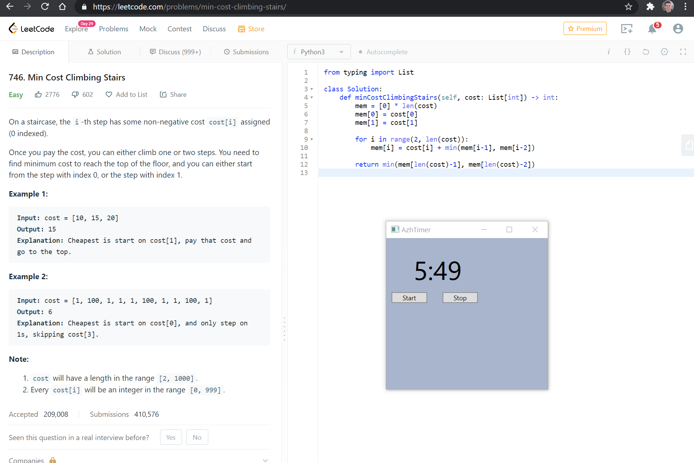

I work on AI + dev tools.
See the discussion of this post on Hacker News.
I can't.
I tried. And then I tried two more times.
I wanted to test my mastery of Node.js and my reliance on Google and Stack Overflow, so I set out on an adventure to make a todo list web app without touching any external resource for help. I just couldn't do it. To be fair, I'm not a web developer so I'm not entirely shocked by this. I only have the itch (and time) to throw together a small web app about once every 6 months.
But this got me thinking. How many people out there, especially professional web developers, can do this?
It isn't to say that you should be able to. But it is an interesting thing to study. At what point is relying on Google a detriment to the performance of a software developer? Or even deeper, does an over-reliance on documentation indicate a lack of critical expertise that will ultimately result in considerably lower job performance? And I don't mean the need to look up an occasional command or an obscure error message.
It reminds me of technical interviews and Leetcode-style problems where you are expected to code up a solution quickly and often without a search engine. Maybe there is something to say about what it is measuring. (Don't get me wrong, technical interviews are still very broken and aren't ecologically valid.)
In fact, researchers have been studying the effect of timed, repeated exercises for software engineering students, much like you would train an athlete. A study over 4 years with 286 students did indeed have some positive results on learning outcomes (Design and Evaluation of an "Athletic" Approach to Software Engineering Education). Another research group looked at frequent, timed skill assessments that ranged from setting up a Ruby on Rails web app to adding user authentication to a web app. Their results indicate their assessments may be a far better assessment than traditional homework assignments (Frequent, Timed Coding Tests for Training and Assessment of Full-Stack Web Development Skills: An Experience Report).
Maybe I need to expand my workouts to include small coding exercises? Who knows.
Give the challenge a shot: can you make a basic web app without googling?
See the discussion of this post on Hacker News.